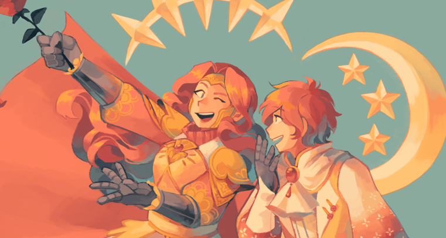
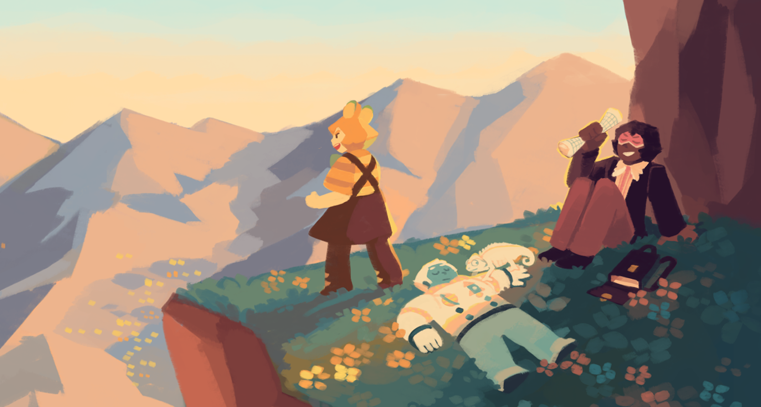
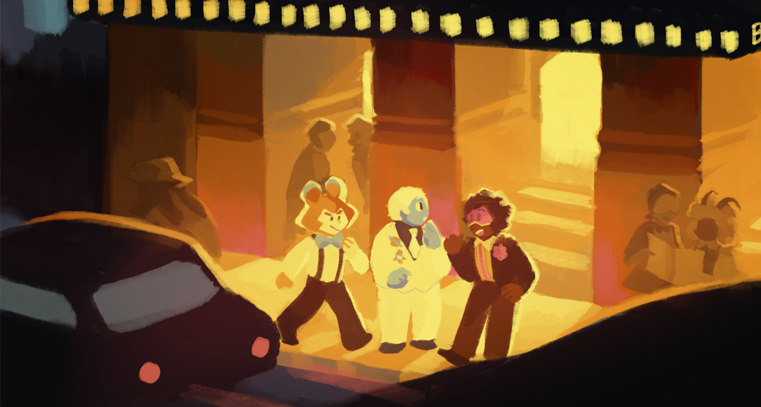
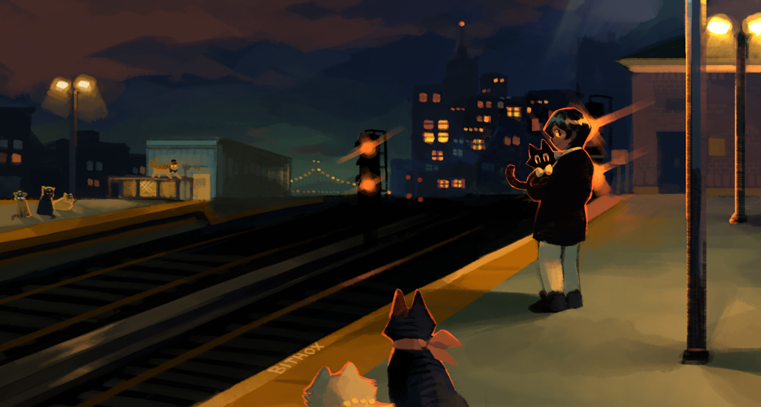
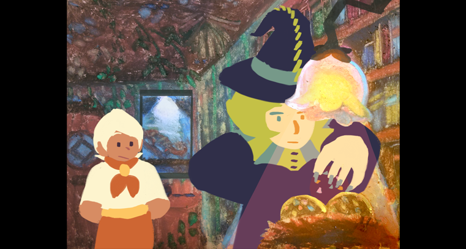

Commission of two twins, one knight and one prince.
This is my most detailed character piece yet.
You can't see it because it's a crop but trust me.

These are my characters who do a lot of adventuring.
Guess this is a rest stop?

They're actually at Carnagie Hall!
Fun fact, I didn't recognize Carnagie Hall when I saw it in real life
but I was inspired by it anyways because I thought it looked like
the outside of a crypt or something.

I based this picture off of the Coney Island station at 7PM!
I was struck by the murky color of the sky. Couldn't capture it in the end though.

A still from an animated short I did about a witch gathering ingredients.
The one on the left is an egg witch and the one on the right is a lizard witch. BACK